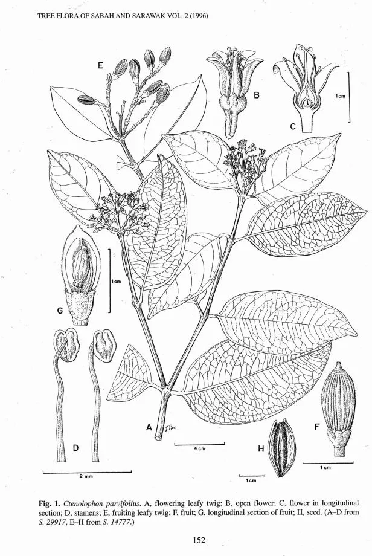

Ctenolophonaceae
Ctenolophon Family
Ctenolophonaceae is a small family of flowering plants belonging to the order Malpighiales. It comprises a single genus, Ctenolophon, with only three known species of evergreen trees and shrubs found in the paleotropical regions of West Africa and Malesia (including the Malay Peninsula, Philippines, and New Guinea).
Overview
The Ctenolophonaceae family is characterized by its limited diversity and specific tropical distribution. These plants are typically trees or large shrubs inhabiting lowland evergreen forests. The family is distinct within the large and diverse Malpighiales order, representing an early diverging lineage.
Members of this family are recognized by their opposite, leathery leaves with prominent stipules, radially symmetrical flowers with 10 stamens fused at the base, and characteristic capsular fruits surrounded by persistent sepals. While not economically significant on a global scale, they are a component of tropical forest ecosystems in their native ranges.
The phylogenetic placement of Ctenolophonaceae within Malpighiales has been subject to some debate, but molecular studies often place it near families like Erythroxylaceae (Coca family) and Rhizophoraceae (Mangrove family).
Quick Facts
- Scientific Name: Ctenolophonaceae Exell & Mendonça
- Common Name: Ctenolophon Family (not widely used)
- Number of Genera: 1 (Ctenolophon)
- Number of Species: Approximately 3
- Distribution: Paleotropical: West Africa and Malesia (Malay Peninsula, Borneo, Sumatra, Philippines, New Guinea)
- Evolutionary Group: Eudicots - Rosids - Malpighiales
Key Characteristics
Growth Form and Habit
Plants in the Ctenolophonaceae family are typically evergreen trees or large shrubs. They contribute to the canopy or understory of tropical lowland forests.
Leaves
Leaves are arranged oppositely on the stem. They are simple, with entire (untoothed) margins, and possess a leathery texture (coriaceous). A key feature is the presence of conspicuous interpetiolar stipules (stipules located between the petioles of opposite leaves), which are often large, sometimes fused, and enclose the terminal bud. Small, dark glands may be present on the underside of the leaves in some species.
Inflorescence
Flowers are borne in terminal or axillary inflorescences, typically structured as cymes or panicles (branched clusters).
Flowers
The flowers are bisexual and radially symmetrical (actinomorphic), usually 5-merous (parts in fives).
- Calyx: Consists of 5 sepals, which are fused at the base (connate) and notably persistent, often enlarging as the fruit develops.
- Corolla: Consists of 5 free petals, which are often hairy (pubescent) or have fringed margins.
- Androecium: Contains 10 stamens arranged in two whorls of five. The filaments are fused at their base into a short tube or ring. Anthers dehisce longitudinally (via slits). A nectar disc is typically present inside the stamen whorls.
- Gynoecium: Features a superior ovary composed of 2 (rarely 3) fused carpels. The ovary has 2 locules, each containing 2 ovules. There are 2 styles, which may be free or fused at the base.
Fruits and Seeds
The fruit is a woody or leathery capsule that dehisces loculicidally (splits open along the locule walls) to release the seed(s). Often, only one seed develops per fruit due to abortion of other ovules. The persistent and sometimes enlarged sepals remain attached to the base of the fruit. The seeds are relatively large and often possess an aril (a fleshy appendage).
Chemical Characteristics
Limited chemical studies have reported the presence of compounds such as ellagic acid in the family.
Field Identification
Identifying members of the Ctenolophonaceae family relies on a combination of vegetative and floral characteristics, particularly useful given its small size and restricted distribution:
Primary Identification Features
- Opposite, simple, leathery leaves: Look for the opposite arrangement and tough, entire-margined leaves.
- Prominent interpetiolar stipules: The presence of stipules between the petioles of the opposite leaves is a key characteristic. These are often large and noticeable, especially around buds.
- 5-merous flowers with 10 stamens: If flowers are present, count 5 sepals, 5 petals, and 10 stamens (often fused at the base). The ovary is superior.
- Capsular fruit with persistent sepals: The woody or leathery capsule surrounded at the base by the remaining (often enlarged) sepals is distinctive.
Secondary Identification Features
- Tree or large shrub habit: These are woody plants, not herbs or vines.
- Tropical forest habitat: Found in lowland evergreen forests in specific tropical regions (West Africa, Malesia).
- Glands on leaf underside: Check the lower leaf surface for small, dark, scattered glands (present in some species).
Seasonal Identification Tips
As evergreen plants, the vegetative features are useful year-round:
- Year-round: Opposite, leathery leaves and persistent stipules are always present. Tree/shrub form is constant.
- Flowering/Fruiting Season: Timing varies geographically. Flowers provide definitive features (petal/sepal/stamen count, superior ovary). Fruits with persistent sepals are also diagnostic when present.
Common Confusion Points
Plants with opposite, simple leaves and stipules can be confused with members of other families:
- Rubiaceae (Coffee family): Also has opposite leaves and interpetiolar stipules, but typically has an inferior ovary and usually 4 or 5 stamens (not 10).
- Rhizophoraceae (Mangrove family): Some members (not just mangroves) have opposite leaves and stipules, but floral structures (e.g., number of parts, ovary position) and fruit types differ. Often associated with coastal or mangrove habitats, though some are inland.
Field Guide Quick Reference
Look For:
- Trees or large shrubs
- Opposite, simple, leathery leaves
- Large interpetiolar stipules
- 5 sepals, 5 petals, 10 stamens
- Superior ovary
- Woody capsule with persistent sepals
Key Variations:
- Stipules may be fused or free
- Petals hairy or fringed
- Leaf underside may have dark glands
- Distribution: West Africa or Malesia
Notable Examples
As the family contains only one genus, Ctenolophon, all examples belong to it. The species are similar in general characteristics.

Ctenolophon genus
(No single common name)
Includes the three species of the family: C. englerianus (West Africa), C. parvifolius (Malesia), and C. philippinensis (Philippines). These are evergreen trees/shrubs characterized by the family features: opposite leathery leaves with large interpetiolar stipules, 5-merous flowers with 10 stamens, and woody capsular fruits subtended by persistent sepals. They occur in tropical lowland forests.
Phylogeny and Classification
Ctenolophonaceae belongs to the large and diverse order Malpighiales, situated within the rosid clade of eudicots. It represents a relatively small and ancient lineage within this order.
Molecular phylogenetic studies confirm its placement in Malpighiales, although its exact sister group relationship has sometimes been uncertain. It is often grouped with or considered close to families like Erythroxylaceae (Coca family), Rhizophoraceae (Mangrove family), and potentially Linaceae (Flax family), suggesting shared ancestry deep within the Malpighiales diversification.
Position in Plant Phylogeny
- Kingdom: Plantae
- Clade: Angiosperms (Flowering plants)
- Clade: Eudicots
- Clade: Rosids
- Order: Malpighiales
- Family: Ctenolophonaceae
Evolutionary Significance
Ctenolophonaceae is significant as a small, geographically disjunct family (West Africa and Malesia) representing an early diverging lineage within the Malpighiales. Its combination of features provides insights into the ancestral characteristics and evolutionary relationships within this large and economically important order. Studying such small, relictual families helps reconstruct the evolutionary history of major plant groups.
- Represents a small, distinct lineage within the large Malpighiales order.
- Its paleotropical disjunct distribution suggests a potentially wider past distribution.
- Morphological features (e.g., stipules, stamen arrangement, fruit type) are important for comparative studies within Malpighiales.